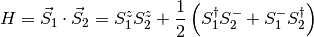
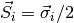
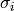
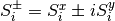

The goal of this exercise is to build a Hamiltonian for the two spin system in the previous exercise, and calculate its ground state. Again the purpose is just to get you familiar with the code.
The Hamiltonian that we will build is the antiferromagnetic Heisenberg model, which reads like:

where  are the spin operators,  are the Pauli matrices, and .
Calculate the ground state (energy and wavefunction) of the antiferromagentic Heisenberg model for a system of two spins one-half.
Two things. First, remember that the wavefunction in the code is written as a matrix, where the left (row) indexes correspond to the left system, i.e. the left spin, and where the right (colum) indexes correspond to the right system, i.e. the right spin.
Second, once we have build up the Hamiltonian we will use the Lanczos algorithm to get its ground state. This is a whole beast on his own, and we are not going to enter much into it. Just believe that it works as described. [1]
The first thing we need is the spin operators. For this you can create a SpinOneHalfSite which is an object in dmrg101 with the operators you need build in:
>>> from dmrg101.core.Sites import SpinOneHalfSite
>>> left_spin = SpinOneHalfSite()
>>> right_spin = SpinOneHalfSite()
>>> # check all it's what you expected
>>> print left_spin.operators['s_z']
[[-1. 0.]
[ 0. 1.]]
>>> print left_spin.operators['s_p']
[[ 0. 0.]
[ 1. 0.]]
>>> print left_spin.operators['s_m']
[[ 0. 1.]
[ 0. 0.]]
Now we have to build the Hamiltonian operator, keeping in mind the wavefunction is a matrix. There is an operator object in the code which takes care of this issue. Basically you create a new operator by creating first a blank operator and adding to it terms. To add a term you have to specify which is the operator acting on the left system, and which on the right system. The following function does that:
def build_HAF_hamiltonian_for_two_spins(left_spin, right_spin):
""" Builds the AF Heisenberg Hamiltonian for two spins.
Parameters
----------
left_spin : a Site
The Site must have the s_z, s_p, and s_m operators defined.
right_spin : a Site
The Site must have the s_z, s_p, and s_m operators defined.
Returns
-------
result : an Operator
The Hamiltonian of the AF Heisenberg.
Notes
-----
This function should raise an exception if the keys for the
operators are not found in the site, but I'll leave without it
because it just makes the code more complicated to read.
"""
result = Operator(left_spin.dim, right_spin.dim)
result.add(left_spin.operators['s_z'], right_spin.operators['s_z'])
result.add(left_spin.operators['s_p'], right_spin.operators['s_m'], .5)
result.add(left_spin.operators['s_m'], right_spin.operators['s_p'], .5)
return result
Then it’s just a matter to call the Lanczos subroutine to solve for the ground state and put everything together:
def main():
#
# create the two spin one-half sites
#
left_spin = SpinOneHalfSite()
right_spin = SpinOneHalfSite()
#
# build the Hamiltonian, and solve it using Lanczos.
#
hamiltonian = build_HAF_hamiltonian_for_two_spins(left_spin,
right_spin)
ground_state_energy, ground_state_wf = calculate_ground_state(hamiltonian)
#
# print results
#
print "The ground state energy is %8.6f.", %ground_state_energy
print "The ground state wavefunction is :",
print ground_state_wf
See a full implementation of the above code. If you run that code you should get something like this:
(dmrg101) $ python tutorial/solutions/heisenberg_for_two_spins.py
The ground state energy is 0.693147.
The ground state wavefunction is:
[[ 0. 0.70710678]
[ 0.70710678 0. ]]
| [1] | The two spin system is small enough to be solve by exact diagonalization, i.e. just diagonalizing fully the Hamiltonian matrix. We use Lanczos here, because the larger systems that we will find later cannot be fully diagonalized, and you’re force to stick with Lanczos or a similar method. |